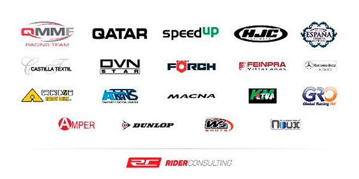
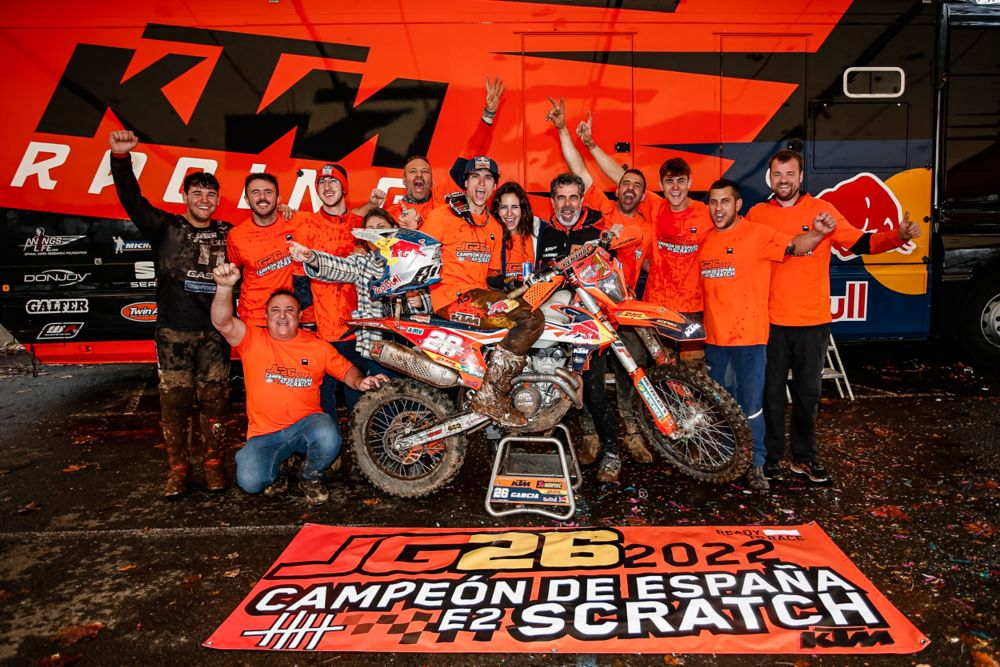
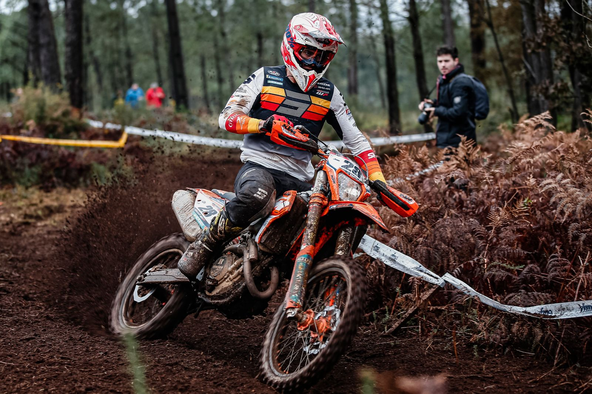
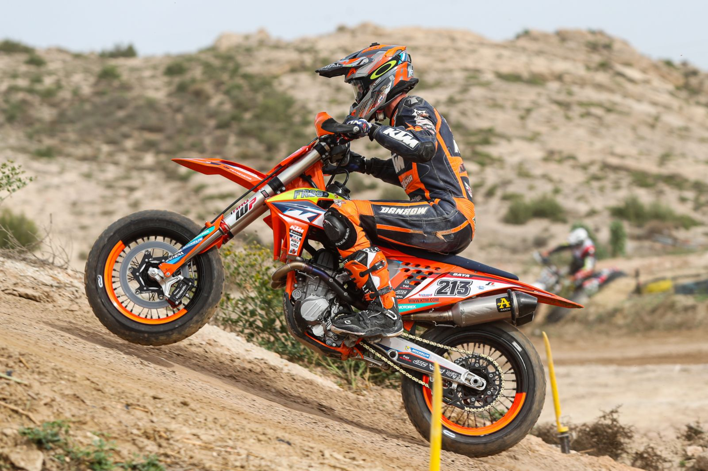
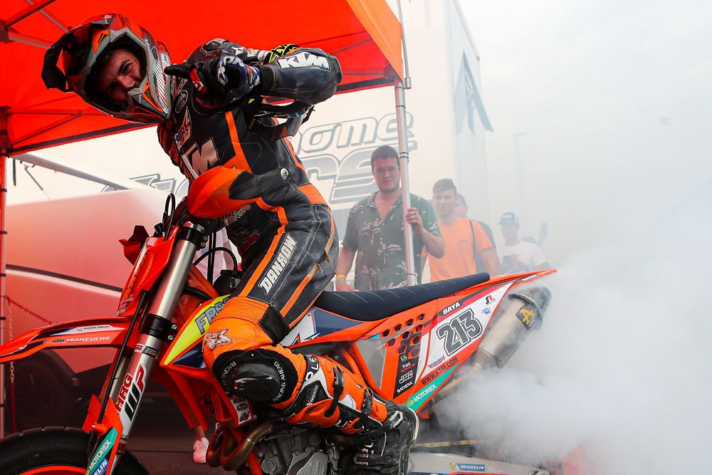

ULTIMAS NOTICIAS
Con un completo KTM FAN PACKAGE gratis ¡el mejor regalo de Navidad! Los pilotos de KTM volverán a estar en primera línea en las tres categorías del Campeonato del Mundo de MotoGP 2022 y estarán encantados de recibir tu apoyo en el GP de Catalunya a celebrar del 3 al 5 de junio de 2022, y nosotros estaremos encantados de que lo puedas hacer desde la zona con mejor ambiente del circuito, ¡la KTM FAN TRIBUNE!
Aprovecha las fiestas de Navidad y regálate a ti o a tus más queridos una entrada para la KTM FAN TRIBUNE ¡y recibe de forma completamente gratuita el KTM FAN PACKAGE compuesto de camiseta, gorra, bolsa, llavero y tapones para los oídos!

ULTIMOS LOGROS 2022
CAMPEONATO DE ESPAÑA DE ENDURO 2022El Campeonato de España de Enduro 2022 ha llegado a su fin de la misma manera como empezó, es decir, con un dominio absoluto del piloto de KTM España Josep García, quien ha rematado con una nueva doble victoria una excepcional temporada en la que se ha impuesto en todas y cada una de las pruebas diputadas, tanto en su categoría como en la absoluta Scrath. A los mandos de su KTM 350 EXC-F, García ha reafirmado su condición de Nº1 nacional de la especialidad, como ya ha demostrado también a nivel internacinal, sumando dos nuevos títulos de Campeón de España.  |
CAMPEONATO DE ESPAÑA DE SUPERMOTO 2022Jaume Gaya y el Team Cucharrera KTM siguen haciendo historia en el Campeonato de España de Supermoto, adjudicándose los títulos Open y Junior tras imponerse en las dos mangas de la última prueba de la temporada, celebrada en el circuito Gasss74 de Villena, Alicante. Este triunfo tiene un doble valor, puesto que Jaume Gaya, de tan solo 21 años de edad, participa en la categoría Junior, pero gracias a sus magníficos resultados ha dominado también de forma absoluta el campeonato, adjudicándose por tanto el título Open.   |